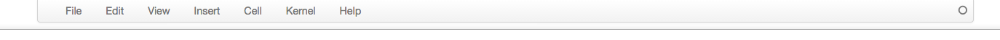

This is a quick entry on how to remove the menubar on IPython notebook, which can be sometimes helpful if you have a small screen and a zoomed in web browser. The solution is suggested in this git issue, by simply add these line to your custom.js file:
$([IPython.events]).on("app_initialized.NotebookApp", function () { $('div#header').hide(); $('div#maintoolbar').hide(); });
On a Mac, it can be hard to find where this (The Mac Spotlight search bar and UNIX ``find`` can't find this because .ipython is a hidden directory.) To find the file directory run this python command:
ip=get_ipython() locate_dir = ip.ipython_dir profile_dir = ip.config.ProfileDir.location print("Main IPython file path: ".format(locate_dir))
Once you have the $PATH, the it should be fairly obvious to find profile_default/static/custom where custom.js is contained. Just copy and paste the above code snippet in the file, and restart the IPython and it should now look like this:
